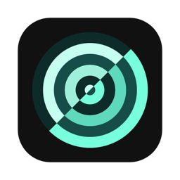
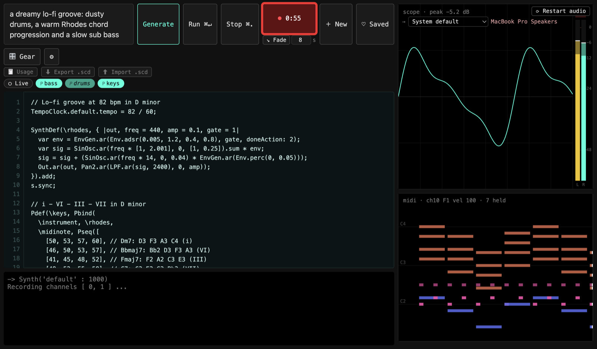

AnInstrument
Describe a sound. Claude writes the SuperCollider code. You play it live, change it, break it, and learn how it works.
Download for Mac
Free · Apple silicon · updates itself

Prompt to code
Ask for a sound in plain words and refine it as a conversation. The code is yours to edit and run.
Live coding
Each part becomes a toggle. Mute one and it comes back in on the beat. Live mode re-runs as you type.
See the sound
An oscilloscope, level meters and a piano roll of every note, with chords named in the code.
Record it
Record a take, fade it out, and save it as WAV, MP3 or MIDI. Export the code as a .scd file.
Errors explained
When something breaks, Claude explains why, and Fix rewrites it.
Gear
Which real synths and drum machines could play the sound, with prices and store links.
Getting started
- Install SuperCollider (free). AnInstrument uses it to make the sound.
- Open AnInstrument and add an Anthropic API key from console.anthropic.com under ⚙. Each request shows what it cost.
- Describe a sound and press Generate.